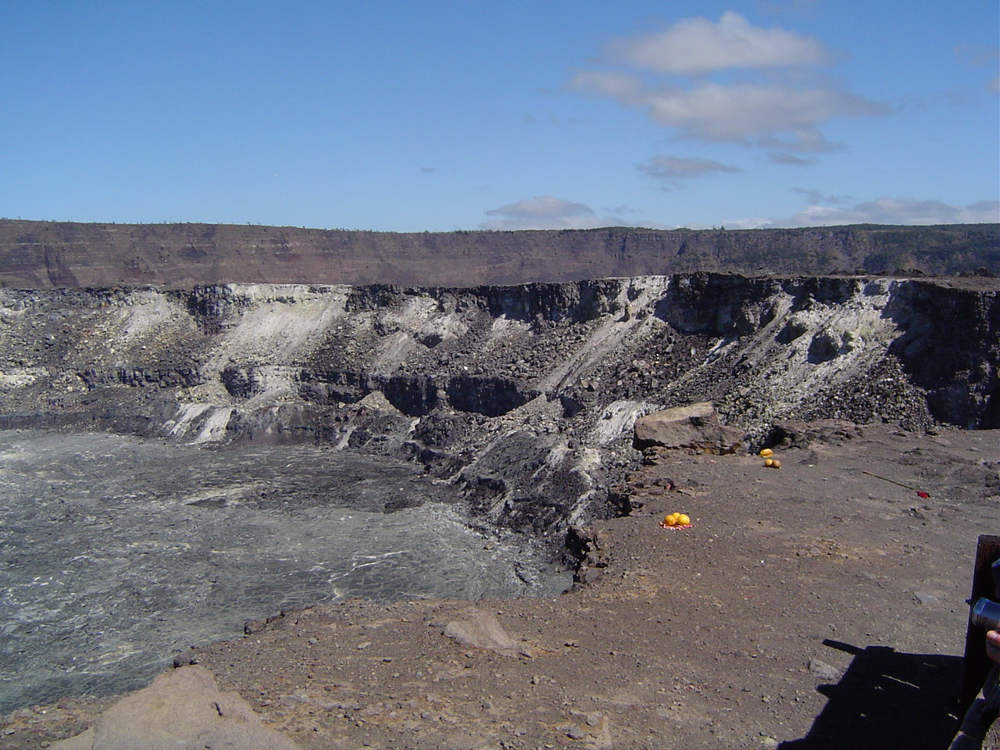

Explore Hawaiʻi Island
Hawaiʻi Island, also called the Big Island, is the largest island in the Hawaiian archipelago. Its volcanic landscapes and coastal towns offer different ways to learn about the island.
Places to Explore
- Hawaiʻi Volcanoes National Park
- Hilo
- Kailua-Kona
Hawaiʻi Volcanoes National Park

Hawaiʻi Volcanoes National Park includes landscapes shaped by Kīlauea and Mauna Loa. It is a place to learn about volcanoes and their connection to Hawaiian culture. Its terrain shows how volcanic activity has shaped the island.
Hilo
Hilo is a town on the eastern side of Hawaiʻi Island. Its coastal setting and surrounding green landscapes give it a distinct character. It introduces a community perspective alongside the island’s volcanic scenery.
Kailua-Kona
Kailua-Kona is a coastal town on the western side of Hawaiʻi Island. Its oceanfront setting is an important part of the town’s character. Comparing it with Hilo introduces different regions of the same island.